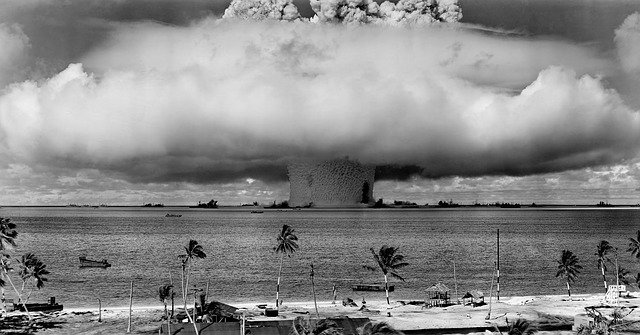

They may be the baddest of all but what would have been the course of history if they didn't ever exist? The Cold War might have been the third world war. Let's assume we are living in a world without the nukes. 
Year 2031,
This is 21 st century India. It is the most populous country in the world. We are now financially strong then ever but that is due
to increase in rich citizens. Poverty is more widespread than ever but overall the huge conglomerates balance that out.
Middle class is just present in few numbers. They are in the danger if sliding below povety line than ever. Per capita income has increased
but so has the population and inflation. Government controls all the industries. Yes, we are now like our chineses counterparts.
Last general elections was in 2019. Since then, same prime minister is ruling the nation. That's because we fought a conventional war
Pakistan in 2021. To suppress the opposition, the then government ammended the constitution to ban all political parties in the nation.
Punjab province of Pakistan, now lies in India. Pakistan is in ruins and China has established it's own protectorate their for an indefinite future.
Their were huge casualties on huge sides. But Russia and USA both extended their help to India in terms weapons and money. USA and Russia
both hace 1% profits of Indian government as payments of that help.